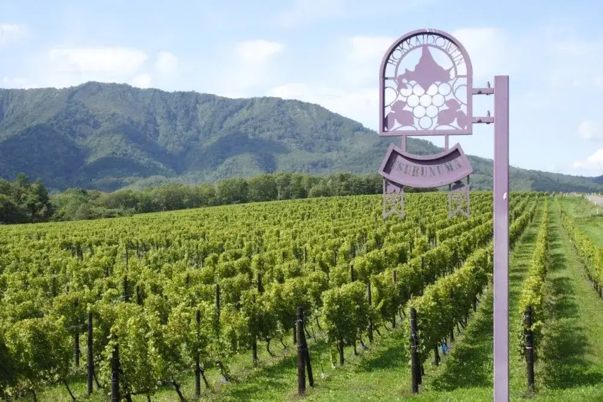
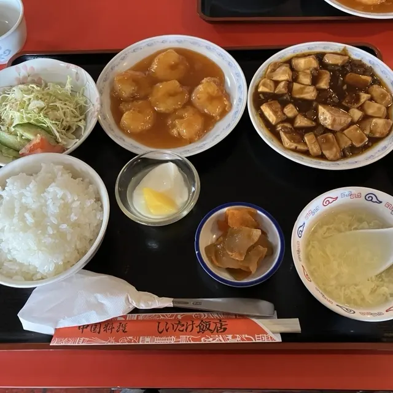
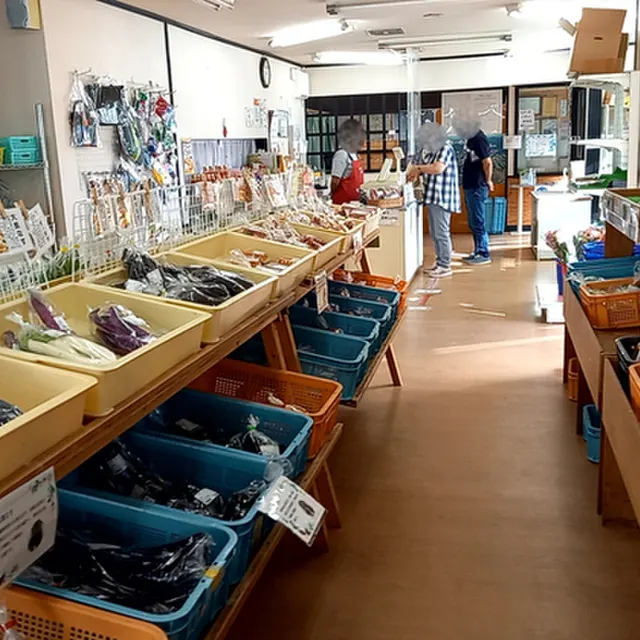
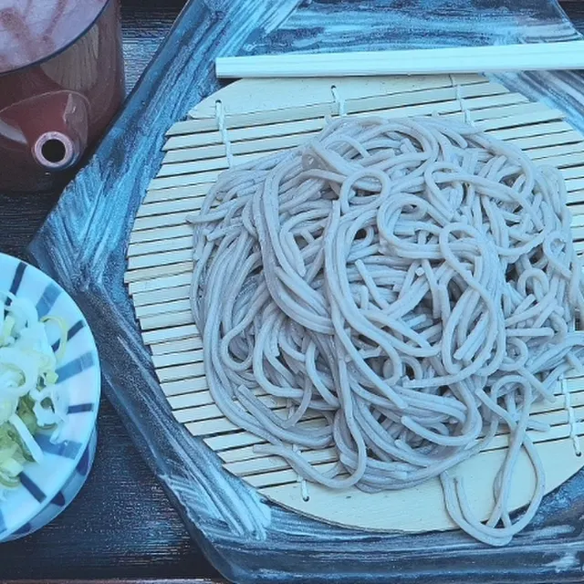
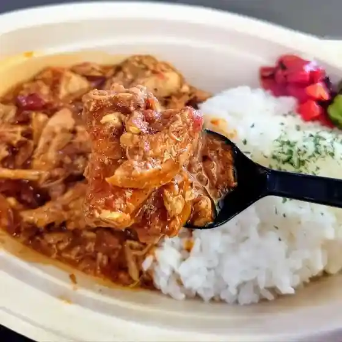
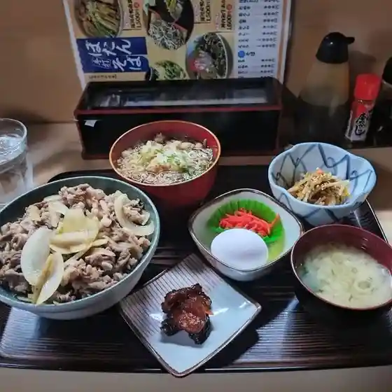
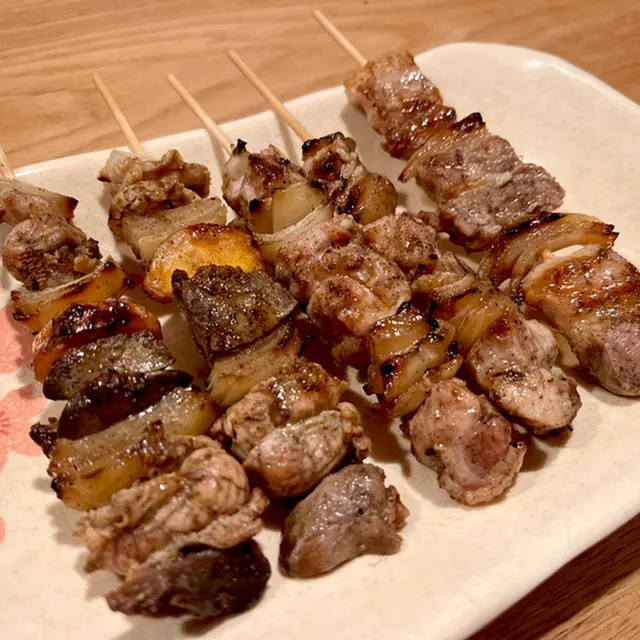
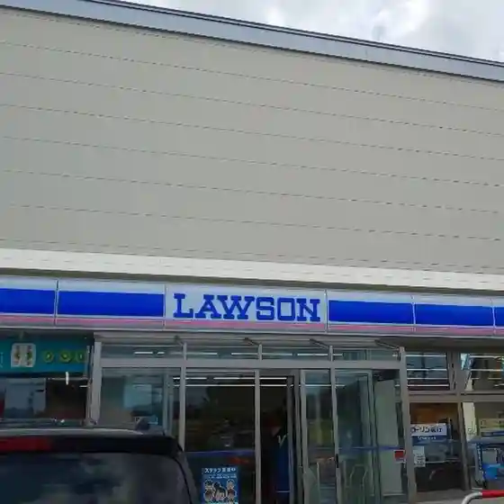
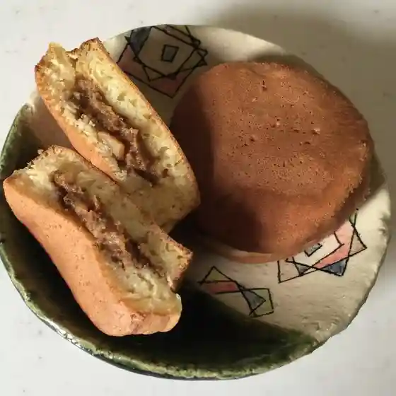

Urausu
Urausu · Hokkaido
Urausu
Highlighted on the Hokkaido map.

Stay
浦臼町自然休養村センター（うらうす温泉）
Urausu Onsen Nature Retreat Center
Onsen lodging in Urausu, Hokkaido.
Dining
しいたけ飯店

Shiitake Hanten
とどけよう倶楽部 ゆめや

Todokeyou Kurabu Yumeya
ぼたん亭

Botan Tei
浦臼ヘルシー食品物産館

Urausu Herushii Shokuhin Bussan Kan
わか杉

Waka Sugi
炭焼き やきとり やす

Sumiyaki Ki Yakitori Yasu
LAWSON 浦臼町店

Lawson Urausu Machi Mise
甘い蔵

Amai Kura
にんじん家族
Ninjin Kazoku
Cafe晴耕雨読
Cafe Seikouudoku
道の駅つるぬま
Michi No Eki Tsurunuma
農家のおにぎり屋さん いしちゃんキッチン
Nouka Noonigiri Ya San Ishichan Kitchin
ぴこるAマート うらうす店
Pikoru A Maato Urausu Mise
石造り倉庫 蔵
Ishizukuri Souko Kura
鶴沼ワイナリー 直売所
Tsuru Numa Wainarii Chokubai Tokoro
舘
Kan
Sights
Tsuru Numa Wainarii
Tsuru Numa Wainarii
Urausu Shrine
Urausu Shrine